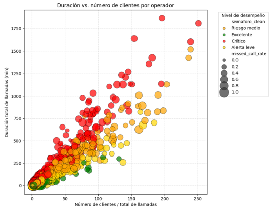
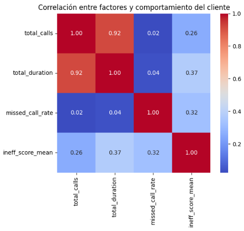
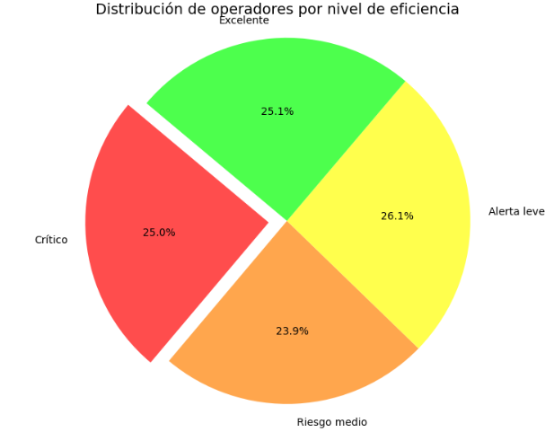

About me
Certified public administrator with experience in data analysis, including data extraction, cleaning, and strategic data modeling.
I generate actionable insights that optimize processes and support strategic decision-making, achieving significant time savings through automation. This combination of impact and efficiency motivates me and drives my passion to continue growing professionally in the data industry.
Technical skills
- Python
- SQL
- Excel
- Tableau (data visualization)
Languages
Spanish (native)
English (intermediate)
Soft Skills
Data Analysis | Problem -solving | Effective Comunication| Teamwork | Results-oriented | Organization | Proactivity | Attention to detail | Process optimization
Selected projects:
1. Analysis of Operational Efficiency in a Contact Center
Objective
Data analysis project aimed at identifying underperforming agents in a contact center using a ranking system and a traffic-light classification based on performance metrics. The solution enabled the evaluation of both individual and team performance, supporting feedback processes, training decisions, and operational improvements.
Tools and Technologies
Python | Pandas | Seaborn |
processes developed
Data Cleaning | Data Transformation | Exploratory Data Analysis (EDA) | Threshold and traffic light definition | Classification of operators by level
key questions
- What is the main factor affecting contact center operational efficiency?
- How are levels of operational inefficiency distributed, and what is their percentage impact?
- What measures could be implemented to improve operational quality and efficiency?
Methodology
- Data preprocessing: cleaning, integration, and standardization of operational data, checking for inconsistencies, duplicates, and missing values..
- Exploratory Data Analysis (EDA): analysis of the distribution of variables, call types, and performance by operator to identify patterns of operational behavior and inefficiencies.
- Business Analysis: Identification of critical factors related to missed calls and operational performance, enabling the generation of actionable insights.
- Statistical hypothesis testing: verification of significant differences in the rate of missed calls for incoming and outgoing calls.
Featured Views
Ratio of the number of customers served to the total call duration per agent. The visualization includes a traffic-light system to identify critical agents and opportunities for improvement.

Correlation matrix between contact center operational variables, enabling the identification of relationships between call volume, call duration, missed calls, and levels of inefficiency.

Segmentation of operators using a traffic-light system based on operational performance indicators and risk levels.

Conclusions and Recommendations
- The identified operational inefficiency exhibits a structural pattern primarily associated with a high rate of missed calls and the low effectiveness of outbound calls.
- Missed calls showed a significant correlation with operational performance (r = 0.52), reaching critical levels when no operators were available.
- Outgoing calls had a significantly higher drop rate than incoming calls (52.56% vs. 41.46%), a difference that was statistically significant (Z = 21.433, p < 0.001).
Recommended strategies
- Optimizing databases and contact schedules to reduce missed calls and improve the effective contact rate.
- Implementation of operational monitoring dashboards to track missed calls, call duration, and operator performance.
- Strengthening training processes and efficiently managing call times to increase productivity and operational quality.